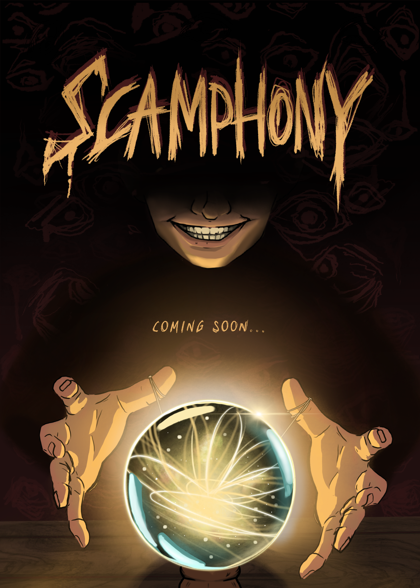
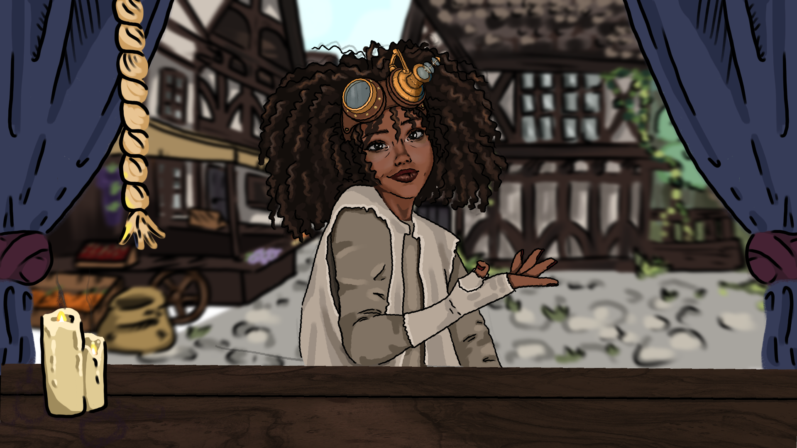
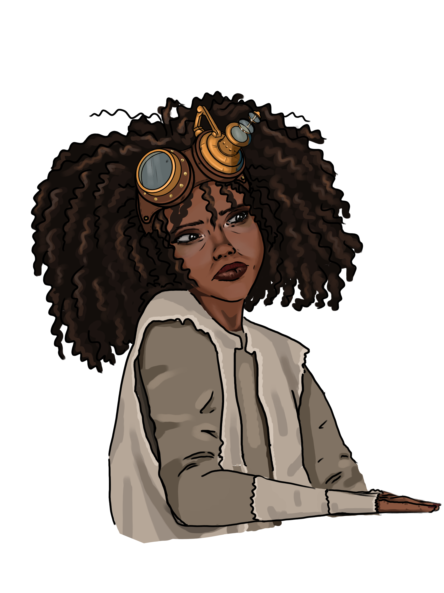
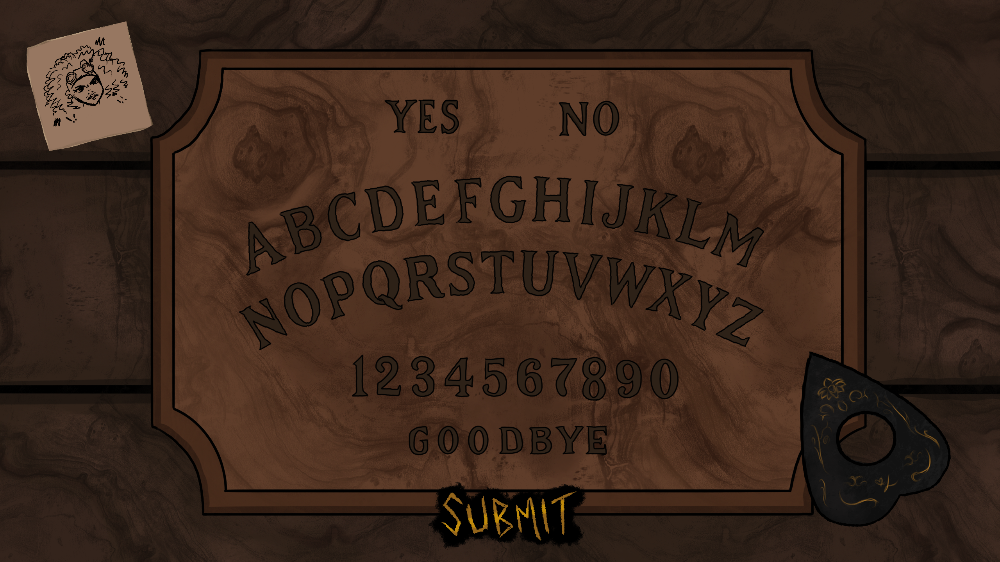
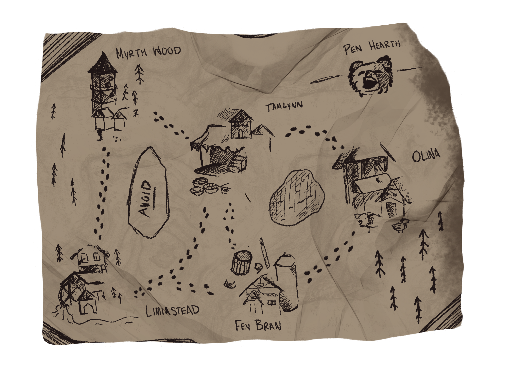

01 / OVERVIEW
Concept
SCAMPHONY is a narrative deduction game in which the player takes the role of a fraudulent psychic. With no supernatural ability, they must read clients, identify their defining traits and choose the right tools to make each reading convincing.
Successful cons earn progress, while mistakes increase suspicion. As suspicion builds, the player must decide when to move on and where to go next, balancing short-term success against the need to keep an escape route available.

02 / MY ROLE
Game Design & Creative Direction
SCAMPHONY is a collaborative two-person project. My role includes:
- Core gameplay concept and loop
- Suspicion and progression systems
- Dialogue and dialogue trees
- Character design and expressions
- Narrative design and worldbuilding
- Visual direction and 2D artwork
Programming and technical implementation are primarily handled by the other developer, with design and feasibility discussed collaboratively.
03 / DESIGN DECISIONS
Systems that make the player think.
Reading the client
Each client has two defining traits hidden within their dialogue. The player must interpret these clues and select a prop associated with the combination they believe is correct.


Local and global suspicion
I designed two connected suspicion systems. Local suspicion represents how convinced the current client is, while global suspicion represents the player's growing reputation as a fraud.
Small mistakes may be recoverable during a reading, but repeated failures accumulate globally and can eventually force the player to leave town.
Planning an escape
Relocation takes place across a connected map, making each move a strategic decision. The player must maintain an available escape route in case suspicion forces them to leave again.
Entering a location without a viable route out means relocation is no longer an option. The player must perform well enough to remain there.

Profit versus morality
Clients range from relatively harmless requests to situations where exploiting them becomes significantly more questionable. These clients can offer greater financial rewards, creating a tension between earning money and choosing who the player is willing to manipulate.
I am exploring ways for these decisions to have longer-term consequences rather than functioning as isolated dialogue choices.
Subverting established expectations
Some later-game design details have intentionally been omitted to preserve the intended player experience.
As the game progresses, established systems and interface conventions are used in unexpected ways, allowing the narrative to influence how familiar interactions feel and behave.
A story within a larger world
SCAMPHONY follows a character connected to a larger game universe, although his identity is never explicitly revealed. Environmental details, dialogue and narrative clues instead allow attentive players to make the connection themselves.
This allows the project to tell a focused standalone story while quietly expanding a much larger interconnected world.
04 / PROCESS & ITERATION
From system to playable prototype.
SCAMPHONY currently exists as a playable prototype containing its environments, dialogue and core interactions. Development has focused on establishing the game's systems and narrative structure before completing animation and final visual polish.
Playable prototype
Early gameplay demonstrates the client-facing interaction and dialogue flow.
Visual development
Character expressions, in-world reference materials and interface artwork support the game's dialogue and deduction systems.